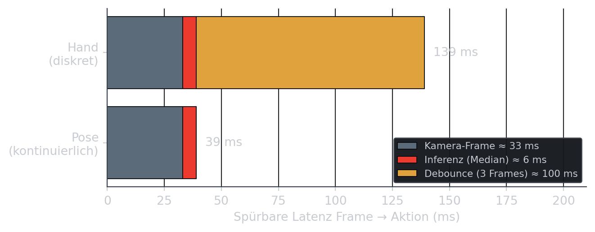

nui/eval-data.json.
| Intent | Versuche | erkannt | Erkennungsrate | Fehltrigger/min | |
|---|---|---|---|---|---|
| Geste → Aktion | |||||
| Hand · Open_Palm | Sprung | 20 | 20 | 100 % | 0.0 |
| Hand · Closed_Fist | Ducken | 20 | 19 | 95 % | 0.5 |
| Pose · Hocke | Ducken | 20 | 20 | 100 % | 0.0 |
Wie gut funktioniert die Steuerung? Dazu ein Selbsttest zu den Lernzielen
Messung · Grenzen · Selbsttest
Wie schnell und zuverlässig ist die Steuerung, und wo hakt es? Unsere Evaluation bleibt leichtgewichtig. Es gibt ein paar echte Messwerte und eine ehrliche Einordnung, aber keine formale Nutzerstudie (das war nicht Ziel des Projekts). Am Ende kannst du die Kernbotschaften in einem kurzen Selbsttest prüfen.
Kurzfassung. Wir messen Verarbeitungslatenz, Erkennungs- und Fehltrigger-Rate in einem kleinen, transparenten Versuch (Rohdaten in nui/eval-data.json, Live-Werte im Panel oben). Unter guten Bedingungen ist die Erkennung hoch und die Verarbeitung flüssig; die konkreten Zahlen stehen in Tabelle 1 und im Latenz-Budget. Die typischen NUI-Grenzen bleiben spürbar: Licht und Verdeckung, Gorilla-Arm, und der Rest des Midas-Touch-Problems. Die Zahlen sind als Größenordnung gedacht, nicht als Benchmark, und wir benennen ihre Schwächen offen.
Ein kleines Eval-Harness (nui/eval.js) hängt sich mit wenigen Zeilen in den Controller. Es erfasst im laufenden Betrieb drei Dinge: die Verarbeitungslatenz pro Frame (Zeit vom Kamera-Frame bis zum abgesetzten Spiel-Befehl), die Zahl committeter Gesten je Klasse und die ausgelösten Aktionen (Sprung / Ducken / Neustart). Nach einer Sitzung gibt window.nuiEval.report() die Zusammenfassung in der Konsole aus.
Du musst dafür aber nicht in die Konsole schauen. Das Panel unten liest dieselben Zahlen live aus deiner eigenen Sitzung: Starte die Kamera im NUI-Dock unten rechts, mach ein paar Gesten (oder spiel kurz), und die Werte füllen sich. Das sind echte Messwerte von deinem Gerät, keine Modellannahme.
Noch keine Daten. Starte die Kamera im NUI-Dock und führe ein paar Gesten aus, dann erscheinen hier deine Messwerte.
Inferenz = reine Modellzeit pro Frame · Frame → Aktion = vom Kamera-Frame bis zum abgesetzten Spiel-Befehl. Beide als Median (p50) und 95-%-Perzentil (p95).
Ein passives Harness kann den Pipeline-Takt messen und Ereignisse zählen. Es weiß aber nicht, was die Person eigentlich vorhatte. Erkennungsrate und Fehltrigger-Rate kommen deshalb aus einem kleinen strukturierten Versuch: jede Geste 20× bewusst ausführen (erkannt / nicht erkannt), dazu ein 2-minütiges Ruhefenster ohne gewollte Geste. Jede ausgelöste Aktion in dieser Ruhephase zählt als Fehltrigger. Die Zahlen unten stammen aus einem gemessenen Versuch auf einem einzelnen Setup (Details im meta-Feld von nui/eval-data.json). Es geht um Größenordnungen, nicht um einen Benchmark.
Die beiden Kennzahlen sind bewusst einfach definiert:
\[ \text{Erkennungsrate} = \frac{\#\,\text{erkannt}}{\#\,\text{Versuche}}, \qquad \text{Fehltrigger-Rate} = \frac{\#\,\text{ungewollte Aktionen}}{\text{Ruhezeit (min)}} . \]
nui/eval-data.json.
| Intent | Versuche | erkannt | Erkennungsrate | Fehltrigger/min | |
|---|---|---|---|---|---|
| Geste → Aktion | |||||
| Hand · Open_Palm | Sprung | 20 | 20 | 100 % | 0.0 |
| Hand · Closed_Fist | Ducken | 20 | 19 | 95 % | 0.5 |
| Pose · Hocke | Ducken | 20 | 20 | 100 % | 0.0 |
Welche Geste wie zuverlässig erkannt wird, zeigt Tabelle 1. Tendenziell sind kompakte, eindeutige Handformen (etwa die Faust) robuster als feinere Gesten. Fehltrigger bleiben dank Confidence-Gate, Debounce und Hysterese selten, ganz weg sind sie aber nicht. Genau das ist der Kern des Midas-Touch-Problems (s. u.).

nui/eval-data.json); Kamera-Frame-Intervall (≈ 33 ms bei 30 fps) und das Debounce-Fenster von drei stabilen Frames (≈ 100 ms, nur diskrete Hand-Gesten) sind strukturelle Konstanten. Der Pose-Pfad nutzt Anstiegserkennung ohne Debounce.
Die gemessene Inferenz ist nur ein kleiner Teil der Verzögerung, die man beim Spielen merkt (Abbildung 1). Grob kommen drei Dinge zusammen: Kamera-Frame-Intervall (≈ 33 ms bei 30 fps), die geloggte Inferenz (Median aus den Frames in nui/eval-data.json) und, nur bei den diskreten Hand-Gesten, das Debounce-Fenster von drei stabilen Frames (≈ 100 ms):
\[t_{\text{spürbar}} \approx t_{\text{Frame}} + t_{\text{Verarbeitung}} + t_{\text{Debounce}}.\]
Der Debounce-Term entfällt für den Pose-Pfad (er nutzt Anstiegs- statt Klassen-Erkennung) und ist der Preis für Stabilität bei den diskreten Hand-Gesten: drei stabile Frames gegen Fehltrigger kosten ~100 ms Reaktionszeit.
Robustheit (Licht & Verdeckung). Eine normale RGB-Kamera ohne Tiefeninfo ist empfindlich gegen schwaches oder seitliches Licht, Gegenlicht und Bewegungsunschärfe. Verdeckte Landmarks, etwa eine Hand halb außerhalb des Bilds oder eine Hüfte hinter dem Tisch, senken die Confidence und damit die Erkennung. Der Pose-Pfad braucht Schultern und Hüfte im Bild und genügend Abstand. Die Neutral-Kalibrierung normiert zwar auf die Torso-Höhe (distanz-invariant), sie kann fehlende Landmarks aber nicht ersetzen.
Latenz. Die reine Inferenz ist mit wenigen Millisekunden Median (s. Latenz-Budget) unkritisch; spürbar wird vor allem das Debounce-Fenster der diskreten Gesten. GPU-Delegate und der Verzicht auf künstliches Throttling halten die Inferenz schnell. Der 1-Euro-Filter glättet den Cursor geschwindigkeitsadaptiv und fügt absichtlich kaum Verzögerung hinzu (Casiez u. a. 2012). Einzelne p95-Ausreißer entstehen durch Garbage-Collection und gelegentliche Modell-Hänger.
Gorilla-Arm & Ermüdung. Hand-Gesten in der Luft und wiederholtes Aufstehen/Hocken ermüden schneller, als man denkt. Das ist das klassische Gorilla-Arm-Problem. Für kurze Demos ist das vertretbar. Für längere Nutzung braucht es kurze, diskrete Gesten, einen klar abgegrenzten Interaktionsraum und den Maus/Tastatur-Fallback.
Midas-Touch. Da die Kamera immer etwas sieht, kann schnell jede Bewegung als Befehl verstanden werden. Dagegen helfen explizites Engagement (globaler Toggle), Confidence-Gate, Debounce/Hysterese, Cooldowns und die Trennung von Spiel- und Navigationskanal (Buxton 1990; Norman 2010). Die Fehltrigger-Spalte in Tabelle 1 zeigt, dass trotzdem vereinzelt Fehltrigger übrig bleiben.
Deshalb ist der Maus/Tastatur-Fallback Pflicht und immer aktiv: Er sichert Bedienbarkeit und Bewertung unabhängig von Licht, Kamera und Tagesform.
Die Zahlen oben sind ehrlich, aber begrenzt. Drei Punkte schränken ihre Aussagekraft ein, und es lohnt sich, sie zu nennen:
Vier Punkte fassen das Projekt zusammen:
Die genannten Grenzen sind kein Endzustand, sondern aktive Forschungsfelder. Mehrere Entwicklungen deuten darauf hin, dass berührungslose Eingabe künftig breiter genutzt wird.
Die Richtung ist dieselbe wie in der kurzen Geschichte: von Spezial-Hardware hin zu berührungsloser Eingabe auf Alltagsgeräten. Die hier gezeigte Webcam-Demo ist dafür ein früher, aber schon heute lauffähiger Schritt.
Prüf dein Verständnis direkt hier – fünf kurze Fragen zu den Kernbotschaften, mit sofortiger Auflösung. Der Test läuft jederzeit im Browser, unabhängig vom Vortrag.
Bediene die Seite mit der Hand
Aus Datenschutz startet die Kamera erst auf Klick. Tippe unten auf „Kamera starten“ (oder Taste N) und navigiere die ganze Website per Handgeste. Maus & Tastatur funktionieren immer, die Kamera ist optional.
Taste N schaltet auch um · Victory öffnet das Menü
NUI-Steuerung erklärt
So bedienst du diese Website per Kamera und Hand. Maus & Tastatur funktionieren immer – die Kamera ist optional und startet aus Datenschutz erst auf Klick.
Der Schalter (oder Taste N) steuert die ganze Seite per Hand. Diese Gesten stehen dann zur Verfügung: